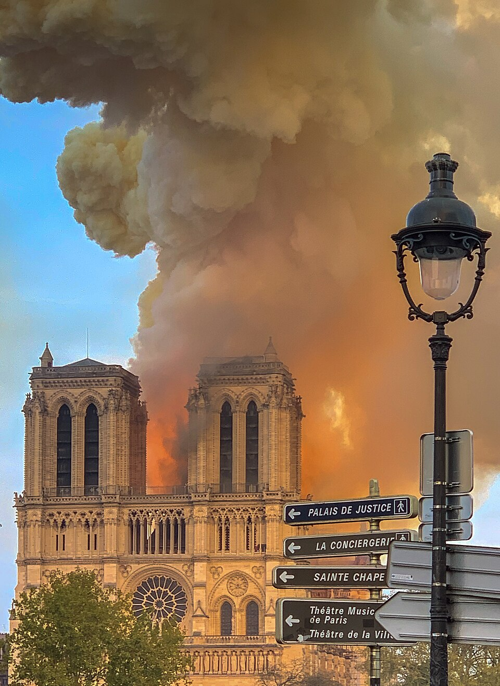

Arde Notre Dame: la aguja de la catedral cayó envuelta en llamas ante un París de rodillas
El fuego se desató al atardecer bajo el techo del templo de 850 años y en una hora devoró la aguja y el bosque de vigas medievales. Multitudes rezaron y cantaron en los muelles del Sena mientras los bomberos peleaban por salvar las torres. Al cierre de esta edición, la estructura resiste.

El humo empezó a subir poco antes de las siete de la tarde, amarillo primero, negro después, desde el techo de la catedral de Notre Dame, y en minutos todo París estaba en la calle mirando hacia la isla de la Cité con la mano en la boca. A las 19:50, la aguja de Viollet-le-Duc, noventa y tres metros de madera y plomo que coronaban la ciudad desde hacía siglo y medio, se dobló como una vela y se desplomó dentro de la nave entre un vómito de chispas, en una imagen que dio la vuelta al mundo en el acto y que nadie que la haya visto en directo podrá olvidar.
Ardía «el bosque», como se llamaba al entramado del techo: mil trescientos robles cortados en el siglo XIII, madera de ochocientos años seca como yesca. Cuatrocientos bomberos pelearon la noche entera, metro a metro, por impedir que el fuego alcanzara las dos torres —si sus campanas caían, caía todo—, mientras una cadena humana de bomberos, curas y funcionarios sacaba a pulso los tesoros: la corona de espinas, la túnica de San Luis, lo que se pudo. En los muelles del Sena, miles de parisinos, creyentes o no, cayeron de rodillas y cantaron avemarías frente al incendio, porque hay noches en que una ciudad entera necesita hacer algo con las manos y la voz.
La víspera había regalado una casualidad que hoy parece milagro: hace apenas cuatro días, una grúa retiró de la aguja las dieciséis estatuas de cobre de los apóstoles y evangelistas, bajadas para su restauración; se salvaron por calendario. La catedral llevaba meses envuelta en andamios de una obra que buscaba justamente salvarla de la vejez, y hacia esos andamios y sus instalaciones miran ya los investigadores, que descartan de entrada la mano criminal. El templo había sobrevivido a pruebas mayores: la Revolución lo saqueó y lo convirtió en Templo de la Razón, y el siglo XIX lo encontró tan ruinoso que se llegó a hablar de demolerlo; fue una novela —el jorobado del señor Hugo— la que avergonzó a Francia y pagó, en lectores, la gran restauración de la que nació la aguja que hoy murió.
La batalla nocturna tuvo sus nombres: el capellán de los bomberos, el padre Fournier, entró con los equipos a rescatar la corona de espinas y el Santísimo; un robot bombero llamado Coloso avanzó adonde ya no se mandaban hombres; y hacia las diez, cuando el fuego mordía el campanario norte, una veintena de bomberos subió por las escaleras medievales a jugarse el edificio, y lo ganó. Los grandes bourdones no sonaron en toda la noche: si sus vigas ardían y las campanas caían, arrastraban las torres consigo. Afuera, las donaciones empezaron antes que el amanecer —cien millones aquí, doscientos allá—, y no faltó quien anotara, con acidez francesa, la velocidad del dinero para las piedras célebres. Pero anoche en los muelles no había acidez: había una ciudad cantando bajito para no llorar a gritos.
Hacia la medianoche llegó el parte que París esperaba conteniendo el aliento: la estructura, las torres y los grandes rosetones resisten; la bóveda está perforada, el techo ya no existe. El presidente Macron, hablando frente a la catedral todavía humeante, prometió reconstruirla «entre todos», y las donaciones de los grandes apellidos de Francia empezaron a contarse por cientos de millones antes del amanecer. Ochocientos cincuenta años de historia —coronaciones, revoluciones, liberaciones, un jorobado de novela que la salvó una vez del abandono— miraron esta noche cómo el siglo XXI aprendía, de golpe, que las cosas eternas también se cuidan.